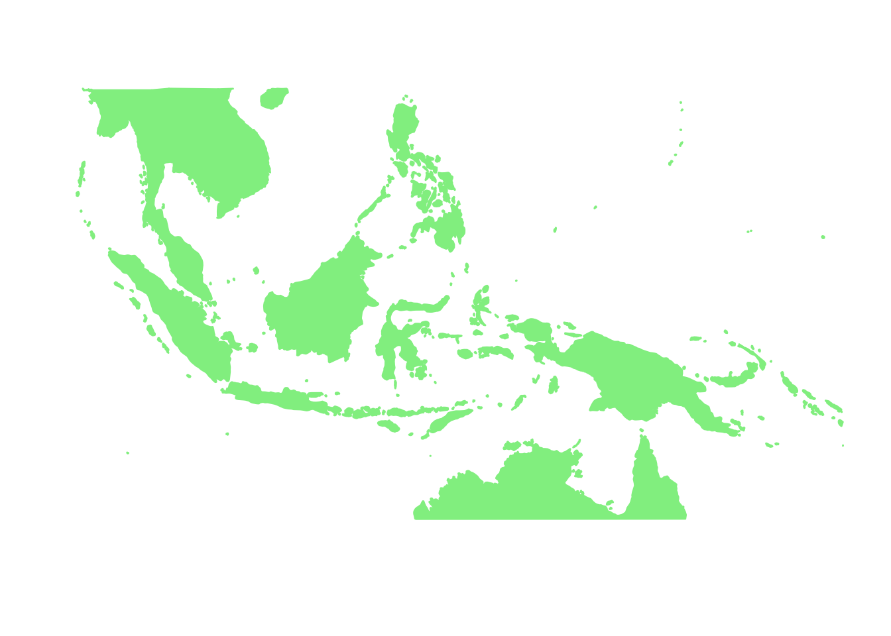
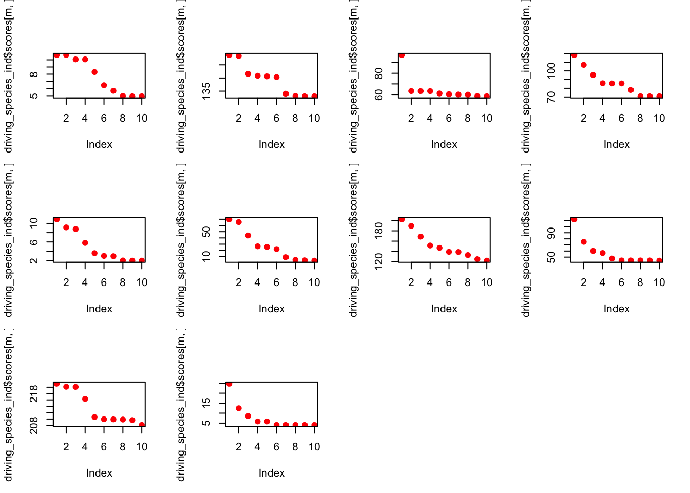

Wallacea region GoM analysis - no seabirds
Kushal K Dey
3/25/2018
Intro
Here we observe the presence absence data of bird species in the Australasian region (Wallacea). We try to interpret that in the context of our Grade of Membership (GoM) model and its applications to presence absence data. The seabirds are excluded from this model analysis.
Packages
library(methClust)
library(CountClust)
library(rasterVis)
library(gtools)
library(sp)
library(rgdal)
library(ggplot2)
library(maps)
library(mapdata)
library(mapplots)
library(scales)
library(ggthemes)Load the data
Wallacea Region data
datalist <- get(load("../data/wallace_region_pres_ab_breeding_no_seabirds.rda"))
latlong <- datalist$loc
data <- datalist$dat
if(nrow(latlong) != nrow(data)) stop("dimensions matching error")Map of Wallacea
world_map <- map_data("world")
world_map <- world_map[world_map$region != "Antarctica",] # intercourse antarctica
world_map <- world_map[world_map$long > 90 & world_map$long < 160, ]
world_map <- world_map[world_map$lat > -18 & world_map$lat < 20, ]
p <- ggplot() + coord_fixed() +
xlab("") + ylab("")
#Add map to base plot
base_world_messy <- p + geom_polygon(data=world_map, aes(x=long, y=lat, group=group), colour="light green", fill="light green")
cleanup <-
theme(panel.grid.major = element_blank(), panel.grid.minor = element_blank(),
panel.background = element_rect(fill = 'white', colour = 'white'),
axis.line = element_line(colour = "white"), legend.position="none",
axis.ticks=element_blank(), axis.text.x=element_blank(),
axis.text.y=element_blank())
base_world <- base_world_messy + cleanup
base_world
birds_pa_data_3 <- dataGoM model
Applying methclust presence absence Grade of Membership model to the presence absence data
topics_clust <- list()
topics_clust[[1]] <- NULL
for(k in 2:10){
topics_clust[[k]] <- meth_topics(birds_pa_data_3, 1 - birds_pa_data_3,
K=k, tol = 10, use_squarem = FALSE)
}
save(topics_clust, file = "../output/methClust_wallacea.rda")Visualization
topics_clust <- get(load("../output/methClust_wallacea.rda"))color = c("red", "cornflowerblue", "cyan", "brown4", "burlywood", "darkgoldenrod1",
"azure4", "green","deepskyblue","yellow", "azure1")
intensity <- 0.8
for(k in 2:10){
png(filename=paste0("../docs/Wallacea/geostructure_birds_", k, ".png"),width = 1000, height = 800)
map("worldHires",
ylim=c(-18,20), xlim=c(90,160), # Re-defines the latitude and longitude range
col = "gray", fill=TRUE, mar=c(0.1,0.1,0.1,0.1))
lapply(1:dim(topics_clust[[k]]$omega)[1], function(r)
add.pie(z=as.integer(100*topics_clust[[k]]$omega[r,]),
x=latlong[r,1], y=latlong[r,2], labels=c("","",""),
radius = 0.5,
col=c(alpha(color[1],intensity),alpha(color[2],intensity),
alpha(color[3], intensity), alpha(color[4], intensity),
alpha(color[5], intensity), alpha(color[6], intensity),
alpha(color[7], intensity), alpha(color[8], intensity),
alpha(color[9], intensity), alpha(color[10], intensity),
alpha(color[11], intensity))));
dev.off()
}K = 2
The geostructure plot for different K.

geostructure2
K = 3
geostructure3
K = 4
geostructure4
K = 5

geostructure5
K = 6
geostructure6
K = 7
geostructure7
K = 8
geostructure8
K = 9
geostructure9
K = 10
geostructure10
Important Birds
We obtain the driving bird species for each cluster using the CountClust package.
driving_species_ind <- ExtractTopFeatures(topics_clust[[10]]$freq, method = "poisson", options = "min")
species_names <- apply(driving_species_ind$indices, c(1,2), function(x) return (rownames(topics_clust[[10]]$freq)[x]))
species_names## [,1] [,2]
## [1,] "Aerodramus spodiopygius" "Geoffroyus heteroclitus"
## [2,] "Chalcites osculans" "Conopophila rufogularis"
## [3,] "Culicicapa helianthea" "Anas luzonica"
## [4,] "Lophura ignita" "Carpococcyx radiceus"
## [5,] "Dinopium shorii" "Houbaropsis bengalensis"
## [6,] "Lonchura leucosticta" "Micropsitta keiensis"
## [7,] "Ficedula monileger" "Anorrhinus austeni"
## [8,] "Trichastoma buettikoferi" "Hydrochous gigas"
## [9,] "Charmosyna stellae" "Ptiloprora meekiana"
## [10,] "Polyplectron malacense" "Arborophila campbelli"
## [,3] [,4]
## [1,] "Ducula pistrinaria" "Ducula rubricera"
## [2,] "Artamus personatus" "Lichenostomus unicolor"
## [3,] "Macropygia tenuirostris" "Ramphiculus leclancheri"
## [4,] "Lacedo melanops" "Lophura pyronota"
## [5,] "Threskiornis melanocephalus" "Arborophila cambodiana"
## [6,] "Lonchura nevermanni" "Psittaculirostris godmani"
## [7,] "Zoothera marginata" "Seicercus poliogenys"
## [8,] "Treron oxyurus" "Dicrurus sumatranus"
## [9,] "Amalocichla incerta" "Amblyornis macgregoriae"
## [10,] "Garrulax peninsulae" "Myophonus robinsoni"
## [,5] [,6]
## [1,] "Columba pallidiceps" "Micropsitta finschii"
## [2,] "Cracticus nigrogularis" "Eolophus roseicapilla"
## [3,] "Tanygnathus lucionensis" "Collocalia troglodytes"
## [4,] "Pitta baudii" "Ptilocichla leucogrammica"
## [5,] "Coturnix coromandelica" "Dicaeum erythrorhynchos"
## [6,] "Dacelo tyro" "Tanysiptera hydrocharis"
## [7,] "Blythipicus pyrrhotis" "Garrulax milnei"
## [8,] "Sitta azurea" "Arborophila rubrirostris"
## [9,] "Rhagologus leucostigma" "Clytomyias insignis"
## [10,] "Polyplectron inopinatum" "Aethopyga shelleyi"
## [,7] [,8]
## [1,] "Alopecoenas johannae" "Megapodius eremita"
## [2,] "Psitteuteles versicolor" "Certhionyx pectoralis"
## [3,] "Streptopelia dusumieri" "Dicaeum pygmaeum"
## [4,] "Pitta schwaneri" "Caloramphus fuliginosus"
## [5,] "Motacilla samveasnae" "Gampsorhynchus rufulus"
## [6,] "Rhipidura maculipectus" "Lonchura stygia"
## [7,] "Alcippe morrisonia" "Oriolus tenuirostris"
## [8,] "Lophura inornata" "Pitta venusta"
## [9,] "Pitohui nigrescens" "Crateroscelis robusta"
## [10,] "Anthracoceros marchei" "Chloropsis palawanensis"
## [,9] [,10]
## [1,] "Cacatua ducorpsii" "Haliaeetus sanfordi"
## [2,] "Ardea pacifica" "Aythya australis"
## [3,] "Hirundapus celebensis" "Hierococcyx pectoralis"
## [4,] "Cyornis superbus" "Lonchura fuscans"
## [5,] "Dendrocopos macei" "Hierococcyx varius"
## [6,] "Corvus fuscicapillus" "Rallicula mayri"
## [7,] "Chloropsis hardwickii" "Pomatorhinus ochraceiceps"
## [8,] "Myophonus castaneus" "Apalharpactes mackloti"
## [9,] "Rhipidura albolimbata" "Heteromyias albispecularis"
## [10,] "Chrysocolaptes erythrocephalus" "Copsychus niger"The weighting on the influence of the top 10 driving birds on the clusters for each of the 10 clusters under the K=10 model.
par(mfrow=c(3,4))
for(m in 1:10){
plot(driving_species_ind$scores[m,], col='red', pch = 20, cex = 1.5)
}
SessionInfo
sessionInfo()## R version 3.4.4 (2018-03-15)
## Platform: x86_64-apple-darwin15.6.0 (64-bit)
## Running under: macOS Sierra 10.12.6
##
## Matrix products: default
## BLAS: /Library/Frameworks/R.framework/Versions/3.4/Resources/lib/libRblas.0.dylib
## LAPACK: /Library/Frameworks/R.framework/Versions/3.4/Resources/lib/libRlapack.dylib
##
## locale:
## [1] en_US.UTF-8/en_US.UTF-8/en_US.UTF-8/C/en_US.UTF-8/en_US.UTF-8
##
## attached base packages:
## [1] stats graphics grDevices utils datasets methods base
##
## other attached packages:
## [1] ggthemes_3.4.0 scales_0.5.0.9000 mapplots_1.5
## [4] mapdata_2.2-6 maps_3.2.0 rgdal_1.2-16
## [7] gtools_3.5.0 rasterVis_0.41 latticeExtra_0.6-28
## [10] RColorBrewer_1.1-2 lattice_0.20-35 raster_2.6-7
## [13] sp_1.2-7 CountClust_1.5.1 ggplot2_2.2.1
## [16] methClust_0.1.0
##
## loaded via a namespace (and not attached):
## [1] zoo_1.8-0 modeltools_0.2-21 slam_0.1-42
## [4] reshape2_1.4.3 colorspace_1.3-2 htmltools_0.3.6
## [7] stats4_3.4.4 viridisLite_0.3.0 yaml_2.1.18
## [10] mgcv_1.8-23 rlang_0.2.0 hexbin_1.27.1
## [13] pillar_1.1.0 plyr_1.8.4 stringr_1.3.0
## [16] munsell_0.4.3 gtable_0.2.0 evaluate_0.10.1
## [19] labeling_0.3 knitr_1.20 permute_0.9-4
## [22] flexmix_2.3-14 parallel_3.4.4 Rcpp_0.12.16
## [25] backports_1.1.2 limma_3.34.8 vegan_2.4-4
## [28] maptpx_1.9-4 picante_1.6-2 digest_0.6.15
## [31] stringi_1.1.6 cowplot_0.9.2 grid_3.4.4
## [34] rprojroot_1.3-2 tools_3.4.4 magrittr_1.5
## [37] lazyeval_0.2.1 tibble_1.4.2 cluster_2.0.6
## [40] ape_5.0 MASS_7.3-47 Matrix_1.2-12
## [43] SQUAREM_2017.10-1 assertthat_0.2.0 rmarkdown_1.9
## [46] boot_1.3-20 nnet_7.3-12 nlme_3.1-131.1
## [49] compiler_3.4.4This R Markdown site was created with workflowr